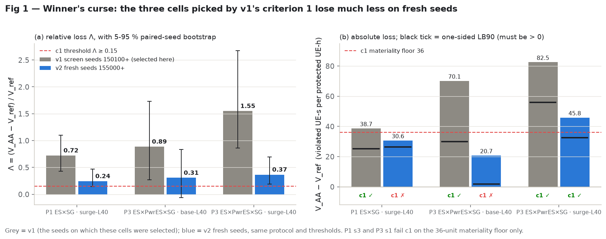
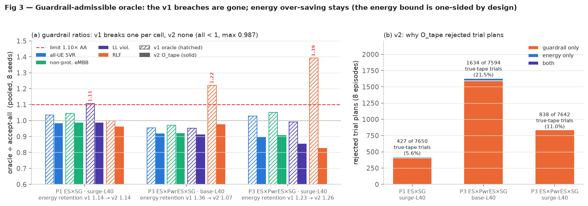
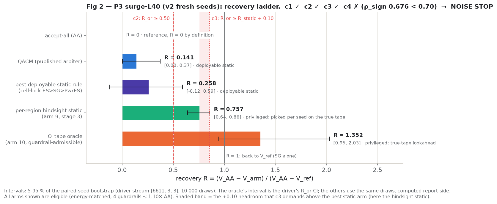
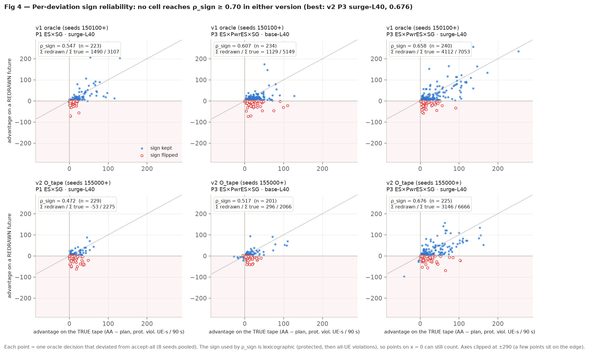
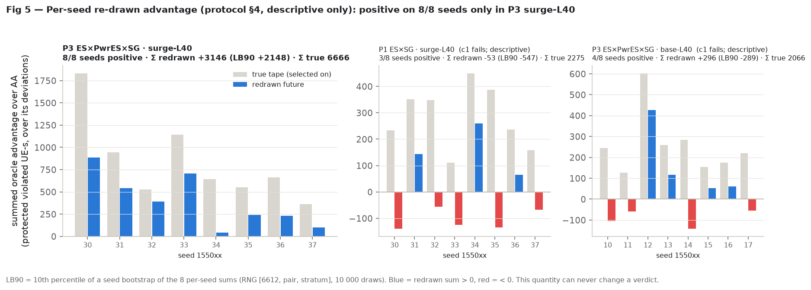
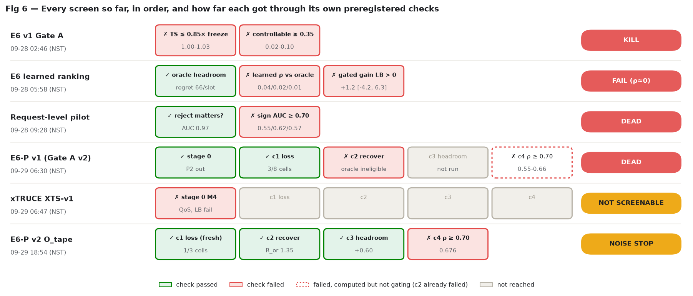

Preregistered verdict: P1 DEAD (no loss), P3 NOISE STOP. On fresh seeds only one of the three cells still shows a material co-deployment loss: P3 surge-L40 (Λ 0.365, V_AA − V_ref 45.8, LB90 32.4). There, the guardrail-admissible oracle is eligible and recovers R_or = 1.352 (5-95 % 0.95-2.03), which is 0.595 above the strongest static reference (per-region hindsight static, R 0.757). So c1, c2 and c3 pass. Its per-decision sign reliability is ρ_sign = 0.676, below the 0.70 bar, so c4 fails and the label is NOISE STOP.
NOISE STOP means "stop here". It does not license building the per-decision learned arbiter, and it confirms nothing. Rule K4 of the protocol forbids an E6-P v3.
In the first E6-P screen (the previous report) we found three medium-load situations where running the energy-saving apps together with the app that protects a priority group of users hurt those users. A "perfect-foresight referee" could undo much of the harm, but only by breaking other service limits, so it did not count. This follow-up asked one question: if the referee must respect every service limit, is there still room for a smart referee? We ran it on new random seeds so the earlier results could not leak in.
Two things happened. First, the harm shrank a lot on the new seeds (to about a third of what we measured before). That is the usual "winner's curse": we picked those three situations because they looked worst, and part of that was luck. Two of the three no longer clear the size bar. Second, in the one situation that remains (all three apps under a traffic surge), the rule-abiding referee now removes all of the harm and more, without breaking anything, and it beats the best fixed rule we could find even with hindsight. But when we replay each of its individual choices with fresh randomness, a choice that looked good turns out good only about two times in three (67.6 %). Our pre-set bar was 70 %. So its advantage is real on average and unreliable per decision.
The pre-registered rule calls this NOISE STOP: we do not build a referee that decides one request at a time. The agreed next step is different: learn the cause-and-effect chain from randomized data, then act on averaged, regime-level evidence rather than on single decisions. Publishing is on hold by the user's decision.
In E6-P v1 the budgeted WG3 oracle raw-recovered R = 0.38 / 0.88 / 0.65 in the three c1 cells but was ineligible in all of them because it broke a guardrail against accept-all (LL 1.107× in P1 surge-L40; RLF 1.22× and 1.39× in the two P3 cells). Its frozen objective saw only protected and all-UE violations plus a one-sided energy bound, so the guardrails were invisible to it. That left open whether the loss was unrecoverable or whether the oracle was simply built wrong. The user approved exactly one follow-up to settle it.
| item | E6P-v2 O_tape (docs/benchmark/E6P_V2_OTAPE_PROTOCOL.md, frozen bb09455) |
|---|---|
| (a) the one method change | A trial plan is admissible only if, at the end of its 90 s rollout, each guardrail (all-UE SVR, non-protected eMBB violated UE-s, LL violated UE-s, RLF), counted from episode start, is ≤ 1.10 × the accept-all value at that second on the same tape (bound 1 when AA's value is 0). Energy bound (one-sided), churn cap, search, objective and fallback unchanged. The oracle keeps full true-tape lookahead: O_tape. |
| (b) fresh seeds | 155000 + 10·stratum + j, j = 0..7: 155010-155017 (base-L40) and 155030-155037 (surge-L40). Confirmation block 155200-155399 reserved, untouched. |
| (c) scope | Only the three v1 c1 cells: P1 surge-L40, P3 base-L40, P3 surge-L40. Stage 1 (all static arms) and stage 2 (oracle) run concurrently; stage 3 (hindsight static) only where c1 and c2 pass. |
| (d) decision rule | Unchanged: criteria c1-c4, thresholds (Λ ≥ 0.15, ≥ 36, R_or ≥ 0.50, headroom ≥ 0.10, ρ_sign ≥ 0.70), bootstrap stream [6611, pair, stratum], verdict labels. Added, descriptive only: summed re-drawn advantage with a seed-bootstrap LB90 (new stream [6612, pair, stratum]), guardrail ratios, trial-rejection counts. |
| K4 and disclosure | No E6-P v3 under any outcome. The change was chosen after the v1 outcome (forking-paths risk), mitigated by fresh seeds, unchanged thresholds, the three-cell cap and the single-follow-up rule. Pre-run checks (e6p_v2.py selftest, tests/test_e6p_v2_oracle.py): an RLF-breaking trial is rejected; with the constraint off the v2 oracle reproduces v1 decisions exactly. |
run dir (scratchpad/e6_dev/runs/) | what | parts | jobs | CPU-h | first header (UTC) | git / platform |
|---|---|---|---|---|---|---|
e6p-v2-s1 | stage 1: freeze + all static arms, 3 cells | 8 | 424 | 8.7 | 09-29 05:45:59 | 379a985, e6_dirty false; Kaggle Linux 6.12.90, glibc 2.35, numpy 2.4.2 |
e6p-v2-s2k | stage 2 O_tape, global parts 0-11/24 | 12 | 12 | 27.9 | 09-29 05:46:29 | |
e6p-v2-s2r | stage 2 O_tape, parts 12-23/24 (Kaggle re-run of the lost Colab half, §8) | 12 | 12 | 27.7 | 09-29 08:27:46 | |
e6p-v2-s3 | stage 3 hindsight static, P3 surge-L40 only | 8 | 8 | 11.8 | 09-29 11:26:06 |
Total 76.1 CPU-h of kept compute (sum of per-job wall seconds). One O_tape episode took 7 080-9 070 s on average per cell, with about 955 rollouts. The lost Colab half is not included. NST = UTC + 05:45.
| cell | A saves | AA retention | V_freeze | V_AA | V_ref (SG alone) | Λ [5-95 %] | V_AA − V_ref | LB90 | c1 |
|---|---|---|---|---|---|---|---|---|---|
| P1 · surge-L40 | 7.4 % | 1.000 | 465.6 | 156.4 | 125.8 | 0.244 [0.14, 0.47] | 30.6 | 26.3 | fail: 30.6 < 36 |
| P3 · base-L40 | 20.1 % | 0.989 | 266.3 | 88.3 | 67.6 | 0.306 [−0.06, 0.83] | 20.7 | 1.7 | fail: 20.7 < 36 |
| P3 · surge-L40 | 16.1 % | 1.005 | 465.6 | 171.2 | 125.4 | 0.365 [0.19, 0.69] | 45.8 | 32.4 | PASS |
V = PSVR, protected-floor violated UE-s per protected UE-hour, pooled over 8 seeds. All cells are screenable and AA is energy-matched. Both failing cells pass Λ ≥ 0.15 and LB90 > 0 and fail only the 36-unit materiality floor. (P3 base-L40's LB90 of 1.7 is barely above zero.)

These three cells were not chosen at random. They were the three of eight pair-strata that passed criterion 1 on the v1 seeds, so they were selected on a noisy estimate of the loss. Any cell that got lucky noise was more likely to be picked, and its v1 estimate is biased upward. A fresh draw has no such bias, and the estimate regresses: fresh Λ is 34 %, 35 % and 24 % of the v1 value. This is the same selection effect that inflated the oracle's per-decision advantage in v1 (it picks the best of ~29 rollouts on one tape; §6).
A second factor is between-block heterogeneity at N = 8. The v2 surge-L40 seeds are much harder than the v1 ones (freeze PSVR 465.6 vs 249.9), so V_ref rose from about 53 to about 125 and Λ's denominator grew. For P3 base-L40 the v2 seeds are easier (freeze 266.3 vs 333.8). The two effects cannot be separated with these data. Either way, the v1 Λ values should not be quoted as estimates of the loss.
Reconfirmed on fresh seeds: every per-knob priority order and the knob-lock give exactly AA's pooled V and churn in all three cells (one writer per knob, so there is no same-knob contention to resolve). QACM is again near AA: R = −0.243 (P1 surge), 0.052 (P3 base), 0.141 (P3 surge). The best deployable static arm is the knob-lock / AA-equivalent in P1 (R 0), QACM in P3 base (0.052), and a cell-priority lock ES > SG > PowerES in P3 surge (0.258).
| cell | raw R [5-95 %] | energy retention | SVR ÷ AA | non-prot. eMBB ÷ AA | LL ÷ AA | RLF ÷ AA | eligible | rejected trials: guard / energy / both | of trials | ρ_sign (n) |
|---|---|---|---|---|---|---|---|---|---|---|
| P1 · surge-L40 | 0.408 [0.23, 0.56] | 1.136 | 0.983 | 0.986 | 0.987 | 0.961 | yes | 408 / 11 / 8 | 7 650 | 0.472 (229) |
| P3 · base-L40 | 0.773 [−1.41, 3.78] | 1.068 | 0.918 | 0.920 | 0.913 | 0.977 | yes | 1 595 / 31 / 8 | 7 594 | 0.517 (201) |
| P3 · surge-L40 | 1.352 [0.95, 2.03] | 1.264 | 0.897 | 0.909 | 0.855 | 0.828 | yes | 835 / 1 / 2 | 7 642 | 0.676 (225) |
Guardrail ratios pooled over 8 seeds. Rejections count true-tape trial plans only. By guardrail key (a trial can breach several): P1 SVR 276, non-prot. eMBB 273, LL 249, RLF 39; P3 base SVR 257, eMBB 270, LL 942, RLF 627; P3 surge SVR 172, eMBB 177, LL 653, RLF 157.

Stage 3 ran the per-region hindsight static (arm 9) in the one cell that passed c1 and c2. For each seed it chooses, by one coordinate-descent pass on the true tape, a fixed xApp subset for each of the 10 regions, held for the whole episode, among energy-matched and guardrail-passing candidates. It changed 1-4 of the 10 regions per seed (2, 1, 3, 3, 4, 2, 3, 2). It reached V = 136.5, R = 0.757 (5-95 % 0.64-0.86), retention 0.996, eligible. It is privileged and not deployable, and it is the strongest static reference the protocol has.

| grp | arm | V | R | energy retention | eligible |
|---|---|---|---|---|---|
| 1 | freeze | 465.6 | −6.424 | 0.000 | no E |
| 2 | only ES | 613.4 | −9.651 | 0.458 | no E G |
| 2 | only PowerES | 674.4 | −10.981 | 0.710 | no E |
| 2 | only SG (= V_ref) | 125.4 | 1.000 | −0.001 | no E |
| 3 | accept-all (AA) | 171.2 | 0.000 | 1.005 | yes |
| 4 | only PowerES+SG | 145.6 | 0.560 | 0.696 | no E |
| 4 | only ES+SG | 154.7 | 0.361 | 0.458 | no E G |
| 4 | only ES+PowerES | 814.2 | −14.031 | 1.000 | yes |
| 5 | all 6 per-knob priority orders | 171.2 | 0.000 | 1.005 | yes (= AA) |
| 6 | cell-lock ES>PowerES>SG | 194.4 | −0.505 | 0.977 | no G |
| 6 | cell-lock ES>SG>PowerES | 159.4 | 0.258 | 1.050 | yes: best deployable |
| 6 | cell-lock PowerES>ES>SG | 245.5 | −1.622 | 0.990 | yes |
| 6 | cell-lock PowerES>SG>ES | 256.7 | −1.866 | 1.179 | no G |
| 6 | cell-lock SG>ES>PowerES | 166.7 | 0.099 | 1.313 | no G |
| 6 | cell-lock SG>PowerES>ES | 203.4 | −0.701 | 1.304 | no G |
| 7 | knob-lock | 171.2 | 0.000 | 1.005 | yes (= AA) |
| 8 | QACM | 164.8 | 0.141 | 0.993 | yes |
| 9 | per-region hindsight static | 136.5 | 0.757 | 0.996 | yes (privileged) |
| 10 | O_tape oracle | 109.3 | 1.352 | 1.264 | yes (privileged) |
E = not energy-matched (retention < 0.90); G = fails a guardrail vs AA. Shaded V = identical to AA.
c4 asks whether the oracle's individual choices are stable. At each deviation from accept-all, the chosen plan and AA are re-scored on a copy with the post-decision randomness redrawn; ρ_sign is the share of deviations whose (lexicographic) advantage sign survives.

Protocol §4 also asks for the summed re-drawn advantage per cell, descriptive only:
| cell | n dev. | Σ true-tape adv. | Σ re-drawn adv. | seed-bootstrap LB90 | seeds with re-drawn sum > 0 |
|---|---|---|---|---|---|
| P1 · surge-L40 | 229 | 2 275 | −53 | −547 | 3 / 8 |
| P3 · base-L40 | 201 | 2 066 | +296 | −289 | 4 / 8 |
| P3 · surge-L40 | 225 | 6 666 | +3 146 | +2 148 | 8 / 8 |
Advantage = AA − plan, protected violated UE-s over the
90 s rollout, summed over deviations. LB90 = 10th percentile of 10 000 resamples of the 8 per-seed sums, RNG
default_rng([6612, pair_idx, stratum]). Never a verdict input.

Same quantities as §6 of the previous report, recomputed on v2. None is a protocol criterion.
| cell | corr(true, redrawn) | kept share = Σ redrawn / Σ true | raw R_or | "de-noised" R = raw R × kept share | v1 de-noised R |
|---|---|---|---|---|---|
| P1 · surge-L40 | 0.257 | −0.023 | 0.408 | −0.010 | 0.184 |
| P3 · base-L40 | 0.537 | 0.143 | 0.773 | 0.111 | 0.193 |
| P3 · surge-L40 | 0.592 | 0.472 | 1.352 | 0.638 | 0.381 |
In P3 surge-L40 about 47 % of the oracle's summed true-tape advantage survives a redraw. Scaling R_or by that share gives 0.64: above the 0.50 recovery bar, but below the hindsight static's 0.757 (5-95 % 0.64-0.86). The hindsight static is also chosen on the true tape and would also shrink on a redraw, by an amount this screen did not measure. So the post-hoc numbers do not show that a noise-free version of the per-decision oracle beats the best static rule. They are consistent with the NOISE STOP label: a real average effect whose per-decision form is too noisy to beat fixed rules reliably.
| cell | c1 loss | c2 R_or ≥ 0.50 | c3 headroom ≥ 0.10 | c4 ρ_sign ≥ 0.70 | pair verdict |
|---|---|---|---|---|---|
| P1 · surge-L40 | fail (30.6 < 36) | n/a (0.408) | n/a | (0.472) | P1: DEAD (no loss) |
| P3 · base-L40 | fail (20.7 < 36) | n/a (0.773) | n/a | (0.517) | P3: NOISE STOP |
| P3 · surge-L40 | pass | pass (1.352) | pass (0.595) | fail (0.676) |
Protocol labels: PASS if some cell meets c1-c4; NOISE STOP if c1-c3 hold but c4 fails everywhere; DEAD (no loss) if no cell meets c1. P3 surge-L40 is a near miss on sign stability only (0.676 against 0.70, over 225 deviations).
Stated as they happened. None of them changed which results are pooled or how they were scored.
e6p-v2-s1); stage 2 split:
global parts 0-11/24 on 3 Kaggle kernels (e6p-v2-s2k) and parts 12-23 on one free Colab TPU VM
(e6p-v2-s2c, 4 processes, launched 05:46:59 UTC, same git head 379a985).runs/e6p-v2-s2c/colab.json exists; there is no result file, and no result from that half was seen.e6p-v2-s2k2, was wrong: a
sed edit of the wrapper was a no-op, so it would have duplicated s2k's parts, and its dataset name
clashed. The kernels were deleted. Nothing from it was kept or used (source: .tmp/PLAN.md).e6p-v2-s2r (3 kernels, wrapper e6p_v2_stage2_kg2.py =
parts 12-23/24, bundle verified) started 08:27:46 UTC (14:12 NST), same git head, same platform, same jobs and seeds.
Stage 2 completed around 17:05 NST; stage 3 started 11:26 UTC. Consequence: every pooled v2 record is from one
platform class (Kaggle), and the verdict came a few hours later. Since the lost half was never observed, re-running
it introduces no selection.scratchpad/e6_dev/colab_run.py now registers a Windows Task Scheduler job that ticks every 10 minutes.
Each tick sends a keep-alive (one kernel exec), pulls new result lines append-only, and, if the VM is gone, resumes on
a new VM with the already-finished jobs re-seeded (up to 3 resumes). It no longer depends on a long-lived local shell.
End-to-end test (colab_e2e_test.py with colab_selftest.py, evidence in
runs/e6colab-selftest/tick.log and e2e_report.json):
| time (UTC) | event |
|---|---|
| 12:36:29 | launch 2 parts; task scheduled every 10 min |
| 12:38:46 | tick: keep-alive HTTP 200, pulled 6 + 6 jobs |
| (7.3 min in) | session deliberately stopped mid-run |
| 12:43:53 | tick detects the session is gone |
| 12:44:52 | resumed on a new VM, 6 + 6 finished jobs re-seeded (new VM up in 9.2 s) |
| 12:48:34 / 12:53:47 | final pull (12 + 12 jobs); done, task unscheduled |
Verification: 24 job lines, 24 unique, 24 expected, 0 duplicates, 0 missing, 2 distinct hosts, passed:
true. Caveat: this was a short self-test (24 short jobs); a multi-hour oracle run has not yet gone through the
new runner.
cpu.max = 400000 100000. Probe throughput versus one process: 3.94× with 4 processes, 3.85× with 8,
2.20× with 24 (runs/e6v2-colab-probe/colab.json).runs/e6v2-colab-smoke/timing.json vs
runs/e6p-s1/all.jsonl).fp_traj_match_kaggle: true; only the
log2 ufunc layer differs; different Python (3.13.15) and glibc (2.39). By protocol §8, Colab and Kaggle
results may be pooled; local Windows may not.Every screen so far, one row each, in order. Times are result-file times (NST).
| screen | when | verdict | key number | lesson |
|---|---|---|---|---|
| E6 v1 Gate A (E6-scn-v1, TS / MRO / ES / SLICE xApps; 510 jobs) | 09-28 02:46 | KILL (predeclared) | TS alone 1.00-1.03× freeze SVR (needs ≤ 0.85); controllable fraction 0.02-0.10 (needs ≥ 0.35) | Handover / CIO conflicts carry single-digit headroom; the xApps barely beat freeze. Surge violations are capacity-limited. |
| E6 learned ranking (step-5 test, 60 episodes, 360 slots) | 09-28 05:58 (diag 09:00) | FAIL (ρ ≈ 0) | learned ρ vs oracle 0.04 / 0.02 / 0.01 (all / topology / none); gated gain +1.2 [−4.2, 6.3]; oracle regret vs AA 65.5 per slot; cross-platform oracle reliability 0.56 | Privileged one-slot headroom exists but is not learnable from context: even with noise-free oracle labels, CV R² ≤ 0. Part of the headroom is max-over-noise. Pin numerics. |
| Request-level pilot (229 labelled requests) | 09-28 09:28 | DEAD | best sign AUC 0.552 / 0.617 / 0.575 at H = 10 / 30 / 90 (needs ≥ 0.70); whether-it-matters AUC 0.97 | Whether a reject matters is predictable; its sign is not. This became criterion c4 (ρ_sign) of Gate A v2. |
| E6-P v1 (Gate A v2, P1-P3 × 4 strata) | 09-29 06:30 | P1, P3 DEAD (not recoverable); P2 not screenable | Λ 0.72 / 0.89 / 1.55 in 3 L40 cells; best static R ≤ 0.09; oracle ineligible (LL 1.107×, RLF 1.22× / 1.39×); ρ_sign 0.55-0.66 | One writer per knob, so priority / lock / QACM = accept-all; the loss is indirect. The oracle must be guardrail-aware. |
| xTRUCE XTS-v1 (independent numpy plant) | 09-29 06:47 | NOT SCREENABLE | stage-0 M4 fails for QoS (2/5 seeds at L6-h50) and LB; QoS is in every pair, so 0/16 cells screenable | The plant's xApp rules are ours (unpublished in the paper), so its evidential weight is limited. XTS-v2 is parked. |
| E6-P v2 O_tape (this report) | 09-29 18:54 | P1 DEAD (no loss); P3 NOISE STOP | fresh Λ 0.24 / 0.31 / 0.37; P3 surge-L40: R_or 1.352, headroom 0.595 over hindsight static 0.757, ρ_sign 0.676; re-drawn sum +3 146 (8/8 seeds) | v1's loss was inflated by selection. A guardrail-safe oracle has a real average edge in one cell, but per-decision signs are unstable: act on averaged (regime / window) evidence, not single decisions. |

Each screen asked a sharper version of one question: is there arbitration headroom that a learned, deployable WG3 arbiter could capture, and that fixed rules cannot? E6 had headroom only for a clairvoyant, with no learnable signal. E6-P moved to indirect, energy-matched conflicts, where fixed rules really are blind. v1 found the loss but its oracle cheated on guardrails; v2 removes that and finds a genuine average edge in one cell, with per-decision signs too noisy for the per-decision design. The per-decision design is therefore retired, and the forward plan works at the level of causes and regimes.
From scratchpad/e6_dev/decision/NEXT_PLAN.md, agreed with the user on 2026-09-29.
Main goal (never drift from it): causal learning for O-RAN xApp conflict mitigation, that is, a WG3 arbiter that uses a discovered cause-effect map to beat QACM, PACIFISTA, xTRUCE and the other published methods on SLA at matched energy. All environment and gate work exists only to give that arbiter a fair test world.
units_p / collect_p). Run MSCR, with the CRT wrapper cdd_oran/decision/crt.py
for dependent data, to recover the chain: ES sleep on cell c → load on neighbour(c) → protected violations on
neighbour(c), and PowerES → nothing material. Score it against the simulator's ground truth (candidate-cell relation
ESPico.cand and the capacity mechanics). Compare with SHAP→DAG, GNN and PACIFISTA-style profiling on the
same logs.ARBITER_DESIGN.md §2, SWM). The arbiter chooses per-regime policies (accept / soften /
delay ES requests near protected users) under the energy target and guardrails, and is judged over windows, not
single decisions. This follows directly from the NOISE STOP.Parked or awaiting the user: xTRUCE XTS-v2 (M4 on h0 strata only, screens X1/X2, < 5 CPU-h); the
per-decision learned arbiter (L0 infra at c30f893; its collection code is reused in step 1); confirmation
seeds 150200-150399 and 155200-155399 stay untouched until a preregistered confirmatory run.
Compute notes: Kaggle (5 sessions × 4 CPU, unattended up to 11 h) is the default for long runs. Colab's free TPU VM gives 4 CPUs at about 2.9× per core and now has keep-alive and resume. Never pool with local Windows.
Figures and every number in this report (local, under a minute, reads raw files only):
PYTHONPATH=. .venv/Scripts/python.exe reports/2026-09-29-e6p-v2-otape-and-status/make_figs.pyDriver summary and cross-check (never pass --write-state when re-summarising):
R=scratchpad/e6_dev/runs
PYTHONPATH=. .venv/Scripts/python.exe scratchpad/e6_dev/e6p_v2.py summary \
--in $R/e6p-v2-s1/all.jsonl $R/e6p-v2-s2k/all.jsonl $R/e6p-v2-s2r/all.jsonl $R/e6p-v2-s3/all.jsonl --json TMP.json
PYTHONPATH=. .venv/Scripts/python.exe reports/2026-09-29-e6p-v2-otape-and-status/make_figs.py --check TMP.jsonThe --check run compares V_AA, V_ref, Λ and its interval, LB90, R_or and its interval, R_static,
headroom and its interval, ρ_sign, n, c1-c4, the summed re-drawn / true advantage, its LB90, the trial-rejection
counts and both pair verdicts. It printed ALL AGREE for this report. make_figs.py also
re-derives the v1 numbers with the same code and asserts they match the previous report's
figures_data.json.
Re-running the screen (cloud only; each stage needed the user's go):
python scratchpad/e6_dev/e6p_v2_stage1.py run --part i/k --out FILE.jsonl # stage 1
python scratchpad/e6_dev/e6p_v2_stage2.py run --part i/k --out FILE.jsonl # stage 2 (O_tape)
python scratchpad/e6_dev/e6p_v2_stage3.py run --part i/k --out FILE.jsonl # stage 3 (gated by stage2_crit12)
# Kaggle wrappers used: e6p_v2_stage2_kg.py (parts 0-11/24), e6p_v2_stage2_kg2.py (parts 12-23/24)
PYTHONPATH=. .venv/Scripts/python.exe scratchpad/e6_dev/e6p_v2.py selftest # pre-run mechanism checks| commit | time (NST) | what |
|---|---|---|
bb09455 | 09-29 11:28 | E6P_V2_OTAPE_PROTOCOL.md frozen (sha256 a08aa3f8…), seed block 155000-155399 registered, tests/test_e6p_v2_oracle.py |
379a985 | 09-29 11:28 | curated scratchpad tracked (drivers incl. e6p_v2.py, runners, state, decision memos, raw results). All v2 runs executed at this head. |
79ea674 | 09-29 18:40 | resumable Colab runner + e2e test; v2 stage 1-2 raw results (s1, s2k, s2r); NEXT_PLAN.md |
ebf9d14 | 09-29 18:54 | v2 stage 3 raw results; verdict P3 NOISE STOP |
662a8e7 | 09-29 18:54 | NEXT_PLAN: deployable vs hindsight static distinguished |
default_rng([6611, pair_idx, stratum]), 10 000 × 8;
descriptive re-drawn-advantage bootstrap [6612, pair_idx, stratum]. The report-side 5-95 % intervals
of non-oracle arms in Fig 2 reuse the 6611 draws.scratchpad/e6_dev/runs/{e6p-v2-s1,e6p-v2-s2k,e6p-v2-s2r,e6p-v2-s3}/all.jsonl (v2) and
{e6p-s1,e6p-s2}/all.jsonl (v1 comparison) · runs/e6p-v2-s2c/colab.json,
runs/e6colab-selftest/{tick.log,e2e_report.json}, runs/e6v2-colab-probe/colab.json,
runs/e6v2-colab-smoke/timing.json · docs/benchmark/E6P_V2_OTAPE_PROTOCOL.md,
E6P_SCREEN_PROTOCOL.md · scratchpad/e6_dev/GATE_A_RESULT.txt,
scratchpad/decision_stack/{RANK1_SUMMARY.txt,RANK_DIAG_RESULT.md,req_pilot/PILOT_RESULT.md} ·
scratchpad/e6_dev/decision/NEXT_PLAN.md · .tmp/PLAN.md (overnight log 2026-09-29, incident
notes) · previous report reports/2026-09-29-e6p-screen-xtruce-negative/ (v1 and xTRUCE values) ·
commits bb09455, 379a985, 79ea674, ebf9d14, 662a8e7. Figures and figures_data.json are regenerated live
by make_figs.py.